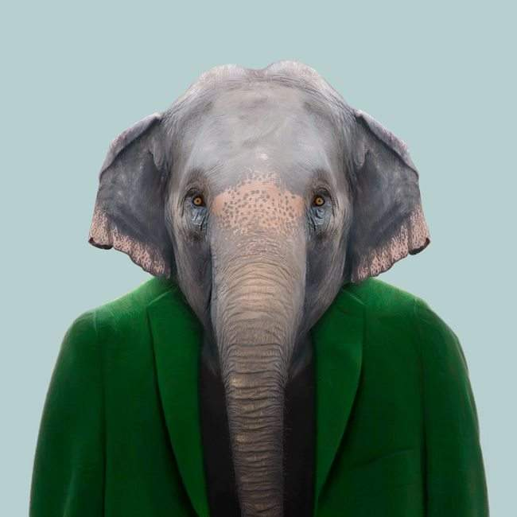
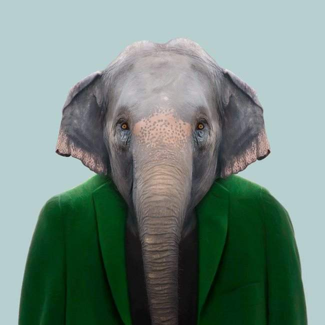

CSET at Thaddeus Stevens College of Technology
The Computer Software Engineering Technology program prepares students to design, develop, and build customized software programs for specific applications.
Computers have become a major factor in the development and operation of the modern industry. From providing means of communications, to operating machines, to facilitating international commerce, to systems animation, computers and their related software programs makes things possible.
Upon completion of the program, graduates will find a wealth of employment opportunities in a variety of businesses and industries. Unlike some disciplines which are tied directly to a specific technical area, graduates of this program will work in small businesses, large industries, private organizations, software specialty businesses, IT Department, Government, and other agencies.


 
